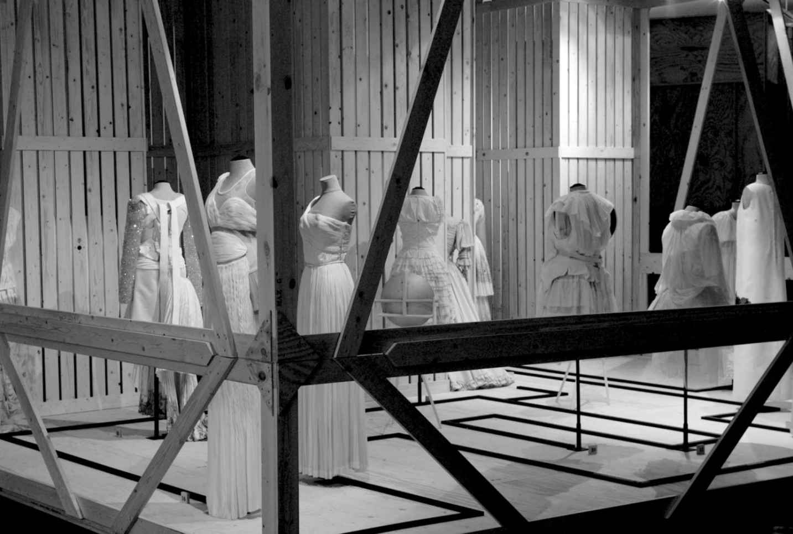

“恶毒的缪斯”（Malign Muses ）是朱迪思· 克拉克2005年在安特卫普时尚博物馆策划的一场开创性大展，展览集合了最新款时装与古董服装，并将它们分列于一系列令人叹为观止的布景之中。布景设计看上去与19世纪的露天市场类似，简洁单调的木质结构组成了可以转动的展架，鲁本· 托莱多创作的大型黑白调时装绘画作品更为展览增添了一丝略带魔幻又戏剧化的感觉。这次展览重点呈现了时装的令人兴奋之处与壮观场面。约翰· 加利亚诺和亚历山大· 麦昆复杂精妙的时装设计，与两次世界大战之间的高级定制时装杂陈一堂，其中就有艾尔莎· 夏帕瑞丽著名的“骨骼裙”，这袭黑色的紧身裙上装饰着突起的骨骼结构。一条造型夸张的1950年代克里斯汀· 迪奥晚礼服，丝绸用料极具质感，上身是有型的胸衣，下身是拖曳的长裙，腰身之后打上了蝴蝶结；与它陈列在一起展示的，是一件19世纪晚期印度生产的精致白色棉布夏装，装饰有印度传统的链式针法刺绣纹样。比利时设计师德赖斯· 范诺顿1990年代末制作的宝石色印花与光洁的亮片设计立在一套色彩艳丽的克里斯汀· 拉克鲁瓦1980年代套装旁边。各式服装复杂精美的组合在克拉克设计巧妙的布景烘托之下使人一目了然，她的排布方式集中于时装对历史进行借鉴与参考的种种丰富多变的形式之上。这场展览的戏剧式场景吸收了18世纪的即兴喜剧和假面舞会元素，也直接借鉴了当代时装设计师在他们每一季时装秀场中对戏剧感与视觉冲击力的运用。

图1 2005年由朱迪思· 克拉克设计、策展的安特卫普时尚博物馆“恶毒的缪斯”展览一角
“恶毒的缪斯”后来移师伦敦的维多利亚和阿尔伯特博物馆，在那里被重新命名为“魅影：时装回眸”（Spectres:When Fashion Turns Back ）。这个新名字传达出了时装最为核心的一个矛盾：时装总是追赶着最新的潮流，可与此同时它又一刻不停地回首过去。克拉克极为有效地呈现了这一核心的对立，鼓励参观者思考时装丰富的历史，同时把它与时装的最新议题联系起来。通过把时代不同，但技法、设计或是主题相似的服饰并列陈设，克拉克实现了这一效果。展览的成功也要归功于克拉克与时装史学家、理论家卡罗琳· 埃文斯的密切合作。通过借用埃文斯在她2003年的著作《前卫时装：壮美、现代与死寂》（Fashion at the Edge:Spectacle,Modernity and Deathliness ）中对时装及时装史的重要解读，克拉克揭示了时装背后鲜为人知的推动力量。埃文斯向世人清楚展示了旧时代是如何一直影响着时装的，正如它在始终影响着更广泛意义上的文化一样。对过去的借鉴可以增加新式夸张设计的可接受度，并且将其与曾经备受崇敬的典范联系在一起。这在展览中格雷夫人（Mme Grès ）裙装设计的纤巧褶裥上就能看出来，它正是以经典的古代服饰为灵感来源的。时装始终追求着年轻和新鲜，它甚至可以表达人类对死亡的恐惧，荷兰的维果罗夫品牌（Viktor and Rolf ）就用全黑的哥特风格礼服清晰地传递着这些信息。
参观者们因此不仅可以看到时装在视觉与材料层面对其历史的运用，又能够通过一系列滑稽的表演片段，得以探究服装更深层的意义。作为对展览露天集市主题的延续，一系列巧妙构思的视觉错觉借用镜子迷惑着参观者的双眼。展览中的裙装看上去一会儿出现一会儿又消失，它们要从小孔中窥视，或者被放大或缩小。于是，参观者们不得不全神贯注地观察他们眼中的一切，又不断怀疑自己对眼中事物的判断。
展览引发了参观者对时装含义的思考。时装与服装形成了鲜明比照，后者通常被人们视为一种更加常态化、功能性的衣着形式，其改变是非常缓慢的，而时装则立足于新奇与变化。它那周期性逐季改变款式的特性在托莱多的圆形绘画作品中得到了体现，画中呈现了一个永不停歇的时装剪影环，每个剪影都与下一个不同。时装也常常被人们认为是一种加之于服装的“价值”，让消费者们渴望拥有它们。展览华美而戏剧化的布景反映了时装秀、广告以及时装大片通过展示理想化的服装形态来诱惑、吸引消费者的各种手段。同样地，时装也可以被看作是同质化的一种形式，它煽动所有人都以某种特定方式穿着打扮，可是与此同时，它又追求个性与自我表达。20世纪中叶高级定制时装在时装业的独断专行，以迪奥的时装为例，与1990年代时装的丰富多样形成对比，从而强调了这种矛盾。
这种矛盾引导着参观者去理解可以在任何时代存在的各种类型的时装。甚至在迪奥的全盛时期，仍然有不同的时尚服饰选择，不管是加利福尼亚设计师们简洁的成衣风格，还是“不良少年”（Teddy boys）的反叛时装。时装可以生发于不同的源头，可以经设计师和杂志之手打造出来，也可以在街头环境中有机地演化。因此，“恶毒的缪斯”展览本身也成了时装史上一个意义非凡的节点。它把旧时代与新时代时装中看似毫不相干的元素统一到了一起，通过感官的布展方式呈现，令观众倍感愉悦又沉迷其间，但又引导他们明白时装的意义远超其表象。
正如展览所揭示的，时装总是建立在矛盾之上。对某些人来说，它们是曲高和寡的精英，是高级定制工艺与高端零售商的奢华天地。对另一些人而言，它们则不断更新，随手可抛，在随便一条高街都能买到。伴随新兴“时装都会”的逐年发展，时装越来越全球化，同时它又可以非常本土化，形成某个小群体专属的小规模时装风格。它可以纳入专业的学术著作或是闻名的博物馆，也可以出现在电视上的形象改造节目与专题网站里。正是时装这种模棱两可之处让它如此令人着迷，当然也引得人们冷眼相待，嗤之以鼻。
时尚风潮（fashions）可以诞生在各个领域，从学术理论到家具设计甚至是舞蹈风格。不过，就一般意义而言，特别是在这个词以单数形式出现时，它指的是穿衣的时尚。在这本《时装》里，我将探寻时装作为一个产业的运作方式，以及它如何连接起更广泛意义上的文化、社会及经济议题。自1960年代开始时装成为一门可以进行严肃学术讨论的学科，由此促进了对其作为图像、客体及文本的诸多分析。从那时起，人们就从一系列重要角度来审视时装。时装研究天然的跨学科特性折射出它与历史、社会、政治和经济等诸多背景的紧密关联，也与诸如性别、性向、民族和阶级等更加具体的问题联系密切。罗兰· 巴特在其符号学著作《流行体系》（1967）与《时尚语言》中从意象与文本的相互作用出发对时装进行研究，后者辑录了他1956年至1967年间的文章。从1970年代开始，文化研究成为探求时装与身份的新平台：例如，迪克· 赫伯迪格在1979年的文本《亚文化：风格的意义》中，说明了街头时装是如何在青年文化的影响下演化的。1985年，伊丽莎白· 威尔逊所著的《梦中装束：时尚与现代性》一书从女性视角对时装在文化和社会上的重要性下了一个重要的断言。艺术史一直以来都是一种重要的方法，它能够细致地分析时装与视觉文化相互交织的不同形式，安妮· 霍兰德与艾琳· 里贝罗进行的研究就是个很好的例子。珍妮特· 阿诺德等人采用了一种基于博物馆研究的方法，她通过观察博物馆收藏的时装，细致地研究了服装的剪裁与结构。多样化的历史研究法对研究时装产业的本质及其与特定背景议题的关系十分重要。这一领域里有贝弗利· 勒米尔基于商业角度的研究，也包括我本人的研究，还有克里斯托弗· 布鲁沃德与文化史相关的研究。自1990年代以来，社会科学界的学者们开始对时装极为感兴趣：丹尼尔· 米勒和乔安妮· 恩特威斯尔两人的研究成果就是这股研究趋势中非常重要的代表。卡罗琳· 埃文斯令人印象深刻的跨学科研究交叉借鉴了各家之法，成果卓著。专业院校里的时装研究同样异彩纷呈。艺术院校极为重视时装研究，将其作为设计专业课程中的学术培养内容，但它已经扩展到从艺术史到人类学等院系之中，同时也成为本科与研究生阶段的专修课程。
学术界对时装的兴趣一路延伸到了收藏有重要时装藏品的众多博物馆中，包括悉尼动力博物馆、纽约大都会艺术博物馆服饰馆以及京都博物馆等。策展人对时装的研究催生了大量的重量级展览，数目巨大的观展人群充分说明了人们对时装的普遍关注。特别是，展览在策展人的专业知识与当前的学术观点之间，在时装的核心即展出的服饰本身与帮助创造我们心中时装概念的种种图像之间，建立了清晰易懂的联系。
自文艺复兴以降，至今已发展出一个庞大的、国际化的时装产业。通常认为时装是从文艺复兴时期兴起的，它是商贸活动、金融行业的发展，人文主义思潮所激发的对个性的关注，以及社会阶级结构转变等多方因素共同作用的结果，其中阶级转变使得人们渴望视觉上的自我展示，并使更多的人群能够实现这一愿望。时装信息通过雕版绘画、行脚商贩、书信往来，还有17世纪末发展起来的时尚杂志得到不断传播，这让时装越来越可视化，人们也越来越渴望时装。随着时装体系的发展，它逐渐吸纳了学徒制和后来的院校课程，以此培育新的设计师与工匠，此外还有手工以及后来工厂化的纺织品与时装生产、零售行业，以及从广告到造型和时装秀制作等丰富多样的营销产业。时装的发展从18世纪晚期开始加快了脚步，等到工业革命正值顶峰的19世纪后半叶，时装已经涵盖了许多不同类型的流行风格。这一时期，为不同客户单独量体裁衣的高级时装作为一种精英化的时装形式在法国逐渐形成。将设计师的想法明确化的高级时装师们不只是这些手工服饰的创造者，更是不同时代时尚理念的制造者。早期重要的高级时装师，比如露西尔，将自己精心设计的时装用专业的模特展示出来，探索了借助时装秀为自己的店带来更多知名度的可行性。露西尔也看到了另一股重要的时装趋势，即不断增长的成衣贸易，它能够快速且轻松地生产大量服装，并将它们推向更广泛的受众。露西尔造访了美国，在那里销售自己的设计，甚至撰写了流行时装专栏，这些都突显了高级时装风格与流行的成品服装的发展之间千丝万缕的关联。尽管巴黎主宰着高级时装的种种典范，但世界各地的城市仍打造着自己的设计师与时装风格。到20世纪晚期，时装真正地全球化起来，出现了像埃斯普利特（Esprit）和博柏利（Burberry）这样的品牌巨头，产品销售遍布全球，发源于西方世界之外的时装也得到了更多的认可。
时装不只是服饰，也不只是一系列形象。实际上，它是视觉与物质文化的一种生动体现，在社会和文化生活中扮演着重要的角色。它是一股庞大的经济驱动力，位列发展中国家前十大产业之一。它塑造着我们的身体，塑造着我们审视别人身体的方式。它能够让我们以创作自由恣意表达另类的身份，也可以支配人们对美丽和可接受的定义。它提出了重要的伦理与道德质疑，联结起殿堂艺术与流行文化。虽然这本《时装》主要关注主导时装设计领域的女装，它仍分析了许多重要的男装案例。它将聚焦时装发展后期的几个阶段，同时也会回溯19世纪之前的重要先驱，以此展现时装是如何演化至今的。书中将会探讨主导时装产业的西方时装，但同样会对这种支配地位进行质疑，并展示其他时装体系是如何发展并与西方时装交叠的。我还将向读者们介绍那些与时装产业相互连接的领域，呈现时装是如何被设计、制造以及销售的，并剖析时装与我们的社会文化生活之间重要的联系方式。